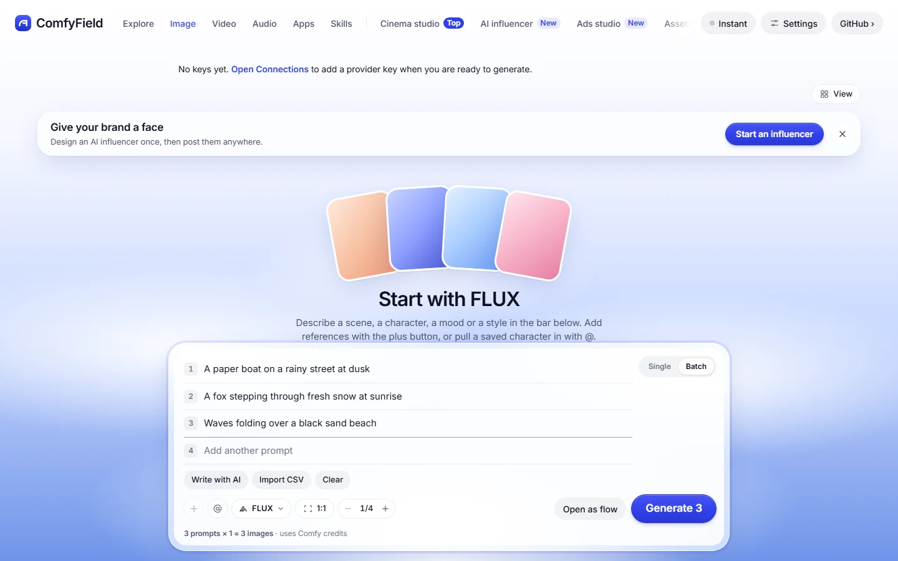
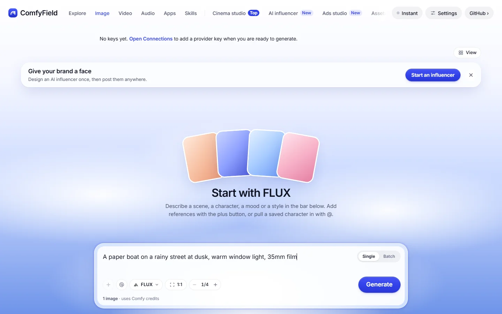
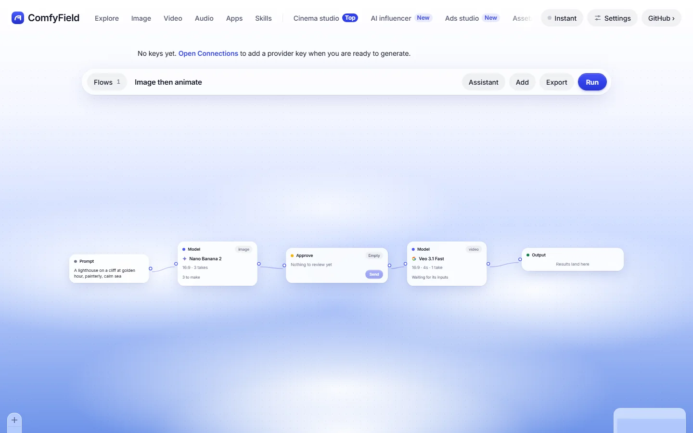
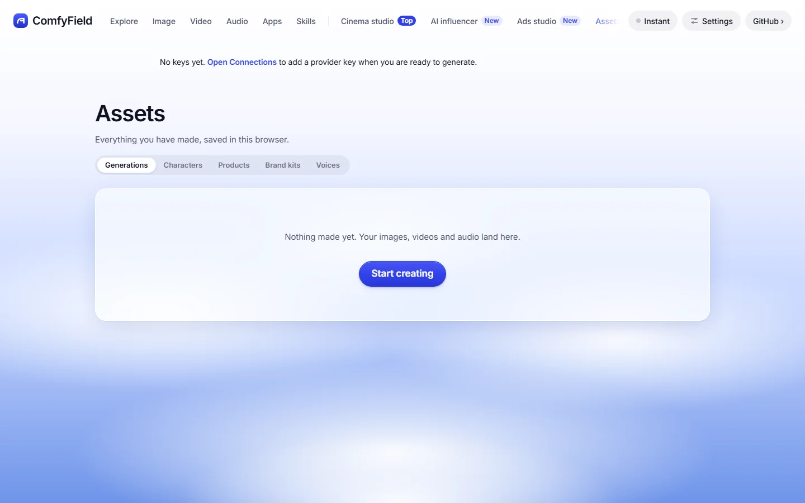
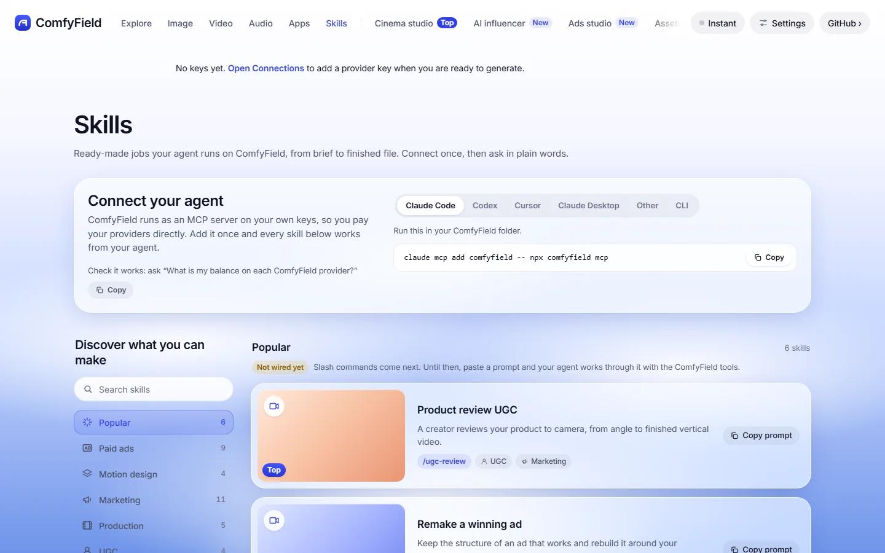

Start with a batch
Write several prompts in the composer. Run them together or open them as a flow.

Make images, video and audio in one local-first studio. Start with Comfy Cloud and Comfy Router. Connect your own keys and keep your work on your machine.
The studio runs locally. Generation runs at your connected providers and uses their credits.

TODO: Add the demo video link before submission.
Generate through connected models, organize results in the Library, and build repeatable work in Flows. Features depend on the selected provider and model. Some tools remain marked “Not wired yet.”
Write several prompts in the composer. Run them together or open them as a flow.

Connect prompts, models and Approve gates. Run fills gaps; Send continues past a review gate.

The Library holds generations and reusable characters, products, brand kits and voices.

The command line and MCP server share the studio's provider code and saved connections. Agents can build and run flows, stopping at review gates.

All five images are existing real app captures from docs/screenshots/readme in the project. They show the interface without keys, not proof of paid generation. No mock screenshots are used.
git clone https://github.com/ergophobian/comfyfield.git
cd comfyfield
npm install
npm run devNo local GPU is needed for cloud generation. For a container, use docker compose up -d from the clone. Read Docker setup.
Browse without a key. Generation uses provider credits. The optional session cap asks before estimates exceed your cap in this tab. Unknown prices pass without counting; it is not a provider billing limit. Pods have a separate daily cap and idle shutdown.
The server discovers models through API v2, submits requests with an idempotency key, polls status and downloads results. Hosted image, video and audio paths share the app's model mapping.
api.comfy.org/v2/models
Bundled API-format workflows load through @comfyorg/sdk. The runner binds media uploads, submits jobs, waits for completion and downloads outputs. It targets Cloud or a rented Pod.
Instant and Session can use different model variants. Check the model notes.
Built for Open Source Higgsfield. These paths are implemented in the project; this launch page does not claim every workflow has passed a live render.
ComfyField is MIT licensed. Providers, model weights, ffmpeg and the caption font have separate terms. Read the third-party notices and contribution rules.